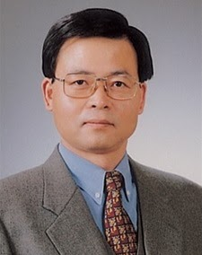
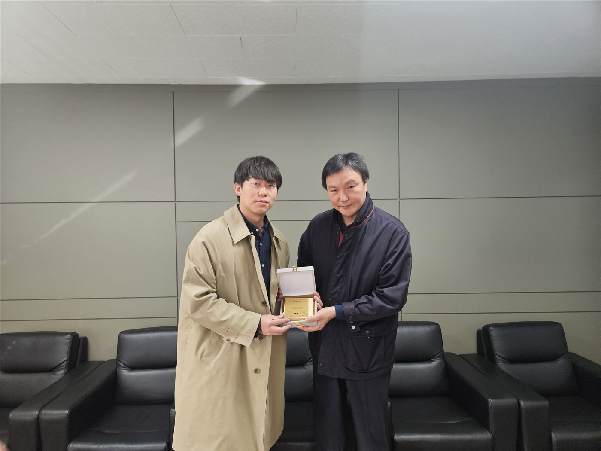
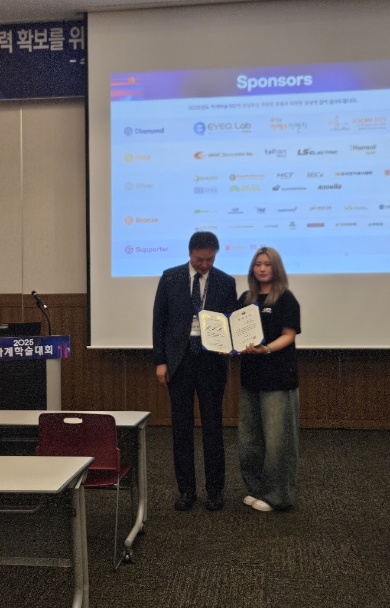

㈜신도기연에 감사장을 전달했습니다
㈜신도기연(대표이사 박웅기)께서 지난 10월 15일 장학기금 100만 원을 후원해 주셨습니다.
장학회의 설립과 발전에 귀중한 도움을 주신 데 깊이 감사드리며, 2025년 12월 10일 감사장을 전달하였습니다. 보내주신 뜻은 태양전지·에너지융합기술 분야의 인재 양성에 소중히 쓰겠습니다.
"학생들이 꿈을 잃지 않고 자신의 역량을 마음껏 펼칠 수 있도록."
이수홍 에너지융합기술 장학회는 에너지 분야의 미래를 이끌 인재를 양성하고, 故 이수홍 교수님의 학문적 업적과 교육 철학을 계승하고자 설립되었습니다. 지속적인 장학사업과 교육 지원을 통해 교육 복지를 실현해 나가고 있습니다.

1959–2023. 대한민국 태양전지·에너지소재 분야의 권위자. 세종대학교 전자정보공학과 교수로 재직하며 생의 마지막 순간까지 후학 양성에 헌신했습니다.
소개 전체 보기태양처럼 따뜻한 에너지, 미래를 밝히는 기술과 함께합니다.
"태양처럼 따뜻한 에너지, 미래를 밝히는 기술과 함께합니다."
이수홍 에너지융합기술 장학회 홈페이지를 방문해주셔서 감사합니다.
이수홍 에너지융합기술 장학회는 에너지 분야의 미래를 이끌 인재를 양성하고, 故 이수홍 교수님의 학문적 업적과 교육 철학을 계승하고자 설립되었습니다.
학생들이 꿈을 잃지 않고 자신의 역량을 마음껏 펼칠 수 있도록, 지속적인 장학사업과 교육 지원을 통해 교육 복지를 실현해 나가고 있습니다.
앞으로도 우리 장학회는 에너지융합기술 분야의 인재들이 더 큰 미래를 그려갈 수 있도록 든든한 동반자가 되겠습니다.
감사합니다.
ENGLISH
Welcome to the Soo-Hong Lee Scholarship Foundation. Our foundation was established to honor the academic legacy and educational philosophy of the late Professor Soo-Hong Lee, and to support the growth of future talents in the field of energy convergence technology.
We are committed to helping students realize their dreams and reach their full potential by providing continuous scholarships and educational support. Through these efforts, we aim to contribute to a more equitable and sustainable future.
Moving forward, the foundation will continue to stand as a strong and reliable partner for young talents striving to create the energy technologies of tomorrow. Thank you.
— President, Euigyu Lee
故 이수홍 (Soohong Lee) · 1959 – 2023. 10. 11
이수홍 교수는 홍익대학교 금속공학과를 졸업한 뒤 일본 도쿄공업대학에서 재료과학 석사학위를, 1991년 호주 뉴사우스웨일스대학교(UNSW) 전자공학과에서 박사학위를 받았습니다. 이후 독일 막스플랑크 연구소 연구원, 삼성종합기술원과 삼성SDI 태양전지 팀장을 거치며 산업계와 학계를 아우르는 연구자로 명성을 쌓았습니다.
2002년부터 세종대학교 전자정보공학과 교수로 재직하며 실리콘 태양전지 분야의 선도 연구자로 자리매김했고, 2018학년도 세종대학교 연구우수교수상을 수상했습니다. 산학협력단장과 연구산학협력처장을 역임하며 활발한 산학 공동연구를 이끌었고, 전략에너지연구소장으로서 고효율 실리콘 태양전지와 연료전지 등 에너지소재 원천기술 확보에 기여했습니다.
연구는 논문에 머무르지 않았습니다. 삼성전자 태양전지 사업부 자문교수로 활동했으며, 한국철도기술연구원 위탁연구를 비롯한 총 19개 과제를 수주하고 43억 원 규모의 연구비를 유치해 실용성과 산업적 파급력을 겸비한 연구자로 평가받았습니다. 2012년부터 2019년까지는 한국산업기술평가관리원이 주관한 전략적 핵심소재기술개발사업에서 '셀 효율 15% 이상의 실리콘 코팅 탄소섬유 전자소재 개발' 국가 중점과제를 수행했습니다.
그러나 교수님의 진정한 위대함은 교육자로서의 헌신에서 드러납니다. 생의 마지막 순간까지 학생 지도를 최우선으로 여겼고, 국내외 학생을 가리지 않고 늘 따뜻한 시선과 공감으로 다가갔습니다. 故 이수홍 교수님은 과학기술의 길을 걸어온 연구자이자, 사람을 중심에 둔 참된 교육자였습니다. 그 뜻은 이수홍 에너지융합기술 장학회를 통해 미래 세대로 이어지고 있습니다.
장학기금 후원에 대한 감사의 뜻 (대표이사 박웅기)
장학회 설립과 발전에 기여한 공로
후원금 100만 원
한국전기전자재료학회 주관, 부산 BEXCO · 수상자 조은빈 (국립공주대학교)
명예회장 이준신 · 상임고문 조은철 · 고문 조영현 위촉
공정하고 투명한 심의를 거쳐, 태양전지·에너지융합기술 분야의 창의적이고 도전적인 인재를 지원합니다.
태양전지 분야에서 우수한 연구성과를 발표한 학생에게 지급하는 장학금
한국전기전자재료학회와 함께 태양전지 분야의 우수 연구자를 시상
장학금과 교수상에 관한 문의는 장학회 사무국(경기도 성남시 분당구 판교역로 192번길 16, 판교타워 8층 806호)으로 연락해 주세요.
장학생 선발 공고와 시상식 소식, 장학회의 활동 기록을 전합니다.
㈜신도기연(대표이사 박웅기)께서 지난 10월 15일 장학기금 100만 원을 후원해 주셨습니다.
장학회의 설립과 발전에 귀중한 도움을 주신 데 깊이 감사드리며, 2025년 12월 10일 감사장을 전달하였습니다. 보내주신 뜻은 태양전지·에너지융합기술 분야의 인재 양성에 소중히 쓰겠습니다.
장학회의 설립과 발전에 기여해 주신 공로에 감사의 뜻을 담아, 2025년 11월 17일 성균관대학교 이준신 명예회장님께 감사패를 전달하였습니다.
전달식 사진은 포토갤러리에서 보실 수 있습니다.
2025년 6월 18일, 한국전기전자재료학회가 부산 벡스코(BEXCO)에서 제1회 이수홍 교수상 시상식을 개최하였습니다.
수상자는 국립공주대학교의 조은빈 학생이며, 시상은 한국전기전자재료학회 융·복합태양전지연구회 위원장이자 본 장학회 명예회장인 이준신 교수님께서 진행해주셨습니다. 수상자에게는 이수홍 장학금(제1호)이 함께 수여되었습니다.
앞으로 이수홍 교수상의 지속적인 발전과 수상자의 학문적 성취를 기원합니다.


장학회는 산업계·학계·일반 후원자 등 다양한 참여 주체가 함께하는 공익적 장학기금을 지향합니다. 모든 후원금은 장학금 지급과 인재 양성 사업에 사용됩니다.
원하시는 금액을 위 후원 계좌로 보내주시면 됩니다. 입금 후 사무국에 알려주시면 후원 내역을 기록하고 감사의 인사를 드립니다.
매월 일정액을 이체 약정하는 방식입니다. 정기 후원은 장학사업을 안정적으로 이어가는 가장 큰 힘이 됩니다.
장학기금의 원금을 늘리는 출연도 환영합니다. 자세한 절차는 사무국과 상의해 주세요.
장학생 선발은 공정하고 투명한 심의 기준에 따라 장학위원회의 심사를 거쳐 결정되며, 모든 과정은 윤리적 기준을 준수하여 운영됩니다.